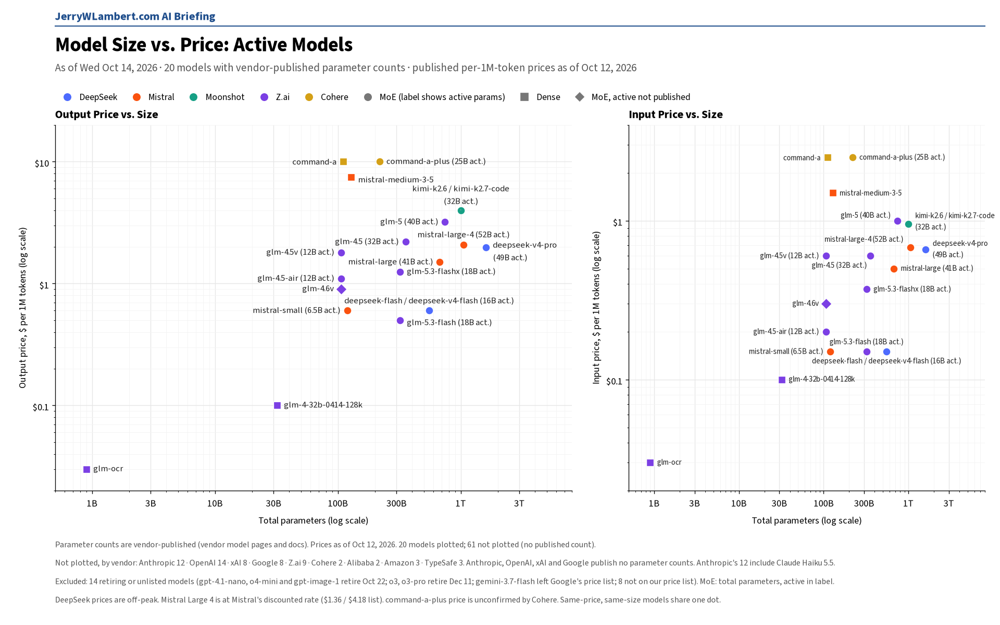
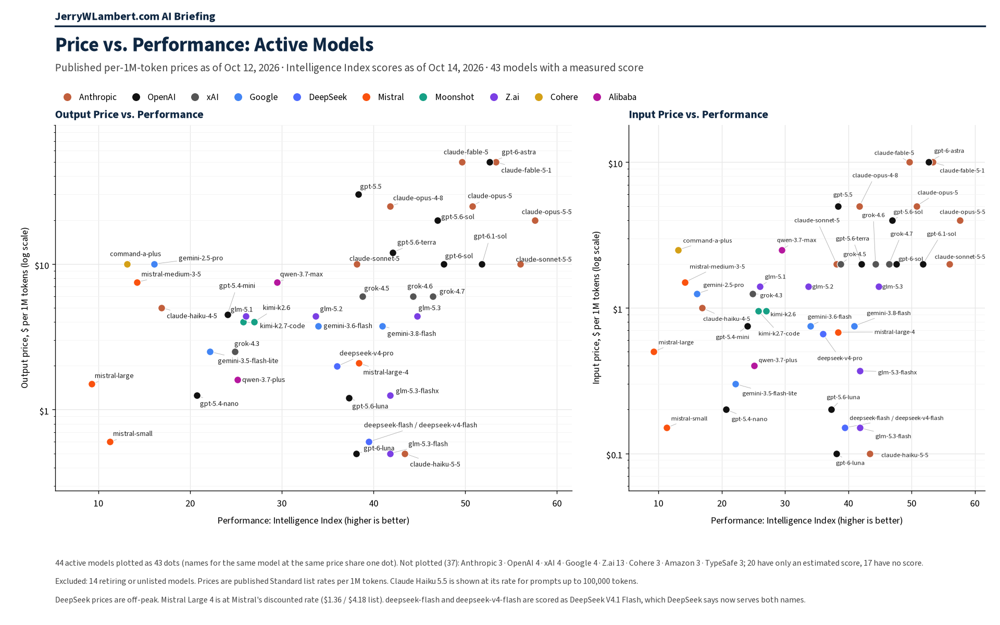

Daily Model Brief, October 14, 2026
Google released Gemini 4 Argon at a launch price of $2.00 input and $10.00 output per million tokens through November 30, rising to $4.00 and $20.00 on December 1.
Download PDFExecutive Summary
Google released Gemini 4 Argon (gemini-4-argon), its new flagship reasoning model, as a stable model on its paid tier. Through November 30, 2026 it costs $2.00 per million input tokens, $0.10 for cached input and $10.00 for output, with thinking tokens billed as output. On December 1, 2026 those prices double to $4.00, $0.20 and $20.00. It is not available on the Free tier or the Google AI Pro plan.
Argon has a 1,048,576-token context window shared by input and output. A normal request can return up to 65,536 tokens; with Google's long-decode background mode it can write up to about 1 million tokens in one answer, billed hop by hop. Caching is implicit only, and Google prints no separate long-context price. At the December price it matches Claude Opus 5.5 and Meta's Muse Wonder ($4.00 input, $20.00 output).
OpenAI notified developers today that GPT-4o (gpt-4o-2024-08-06, gpt-4o-2024-11-20), GPT-4o mini (gpt-4o-mini-2024-07-18), GPT-4.1 (gpt-4.1-2025-04-14) and GPT-4.1 mini (gpt-4.1-mini-2025-04-14) will be removed from the API on January 14, 2027. The recommended replacement is gpt-6-luna. Fine-tuned versions follow the same schedule, and prices are unchanged until then.
Meta's Muse Wonder (muse-wonder-1.0) is unchanged since it opened on the Model API yesterday, at $4.00 input, $0.20 cached and $20.00 output. Muse Spark is unchanged at $1.25 / $0.15 / $4.25. Anthropic changed no prices; it now uses Claude Opus 5.5 ($4 input, $20 output) in its worked cost example instead of Opus 5.
xAI, DeepSeek, Moonshot, Z.ai, Alibaba, MiniMax, Mistral and Perplexity published no price changes. MiniMax reorganized its pricing into a single overview without changing any token price, and Mistral Large 4 stays on sale.
TypeSafe Jev is unchanged at $0.042 input and free output. IBM Granite is unchanged at $0.0636 / $0.265. Prices from Amazon and ByteDance could not be confirmed today; Cohere still publishes no token price. Microsoft's model catalog moved to a new address; it loads again but still lists no pay-as-you-go prices.
What This Means for Customers
- If you want to try
gemini-4-argon, the launch price runs through November 30. Budget at $4.00 input and $20.00 output per million tokens from December 1, and remember that thinking tokens bill as output. Batch and Flex are half the Standard price; Priority is $3.60 / $18.00 through November 30, then $7.20 / $36.00. - If you use Argon's long-decode mode for very long answers, every 64K-token hop is billed, and each hop sends the prompt plus everything generated so far back as input. Read the usage totals across all hops before you estimate cost from the final answer alone.
- If you call
gpt-4o,gpt-4o-mini,gpt-4.1orgpt-4.1-mini, you have three months. Each GPT-4.1 model lists only one snapshot, so the plain names stop working on January 14, 2027 too. Testgpt-6-lunanow; it lists at $0.10 input, $0.01 cached and $0.50 output per million tokens (short context), well below gpt-4.1 at $2.00 / $8.00. - OpenAI now points developers to an optional shutdown_date field on its List models and Retrieve model endpoints, so you can watch for retirement dates programmatically.
- The October 22 and 23 dates are unchanged.
gpt-4.1-nano,o4-miniandgpt-image-1(OpenAI) shut down the evening of October 22 (CT), along with Google'sgemini-omni-flash-previewand Veo 3.1 previews. Google's deep-research-pro preview shuts down October 23. Perplexity retires its routes to older OpenAI models at 7:00 PM CT on October 23. - Claude Haiku 4.5 is still active, with retirement not sooner than tomorrow, October 15, and no date set. Keep a tested fallback ready.
New Models and Price Changes
Prices in USD per 1M tokens.
| Vendor | Model ID | Status | Input | Cached | Output |
|---|---|---|---|---|---|
| gemini-4-argon | New. Stable, paid tier only. Launch price through Nov 30, 2026 (thinking billed as output). Implicit caching only. | $2.00 | $0.10 | $10.00 | |
| gemini-4-argon (from Dec 1, 2026) | Scheduled Standard price printed by Google. | $4.00 | $0.20 | $20.00 | |
| OpenAI | gpt-4.1 | Shuts down Jan 14, 2027; replacement gpt-6-luna. Price unchanged. | $2.00 | $0.50 | $8.00 |
| OpenAI | gpt-4.1-mini | Shuts down Jan 14, 2027; replacement gpt-6-luna. Price unchanged. | $0.40 | $0.10 | $1.60 |
| OpenAI | gpt-4o | Shuts down Jan 14, 2027; replacement gpt-6-luna. Price unchanged. | $2.50 | $1.25 | $10.00 |
| OpenAI | gpt-4o-mini | Shuts down Jan 14, 2027; replacement gpt-6-luna. Price unchanged. | $0.15 | $0.075 | $0.60 |
| OpenAI | gpt-6-luna | Named replacement. Unchanged (short context). | $0.10 | $0.01 | $0.50 |
| Meta | muse-wonder-1.0 | Unchanged since its Oct 13 API opening (preview). | $4.00 | $0.20 | $20.00 |
| Meta | muse-spark | Unchanged. | $1.25 | $0.15 | $4.25 |
| Anthropic | claude-opus-5-5 | Unchanged. Now Anthropic's worked pricing example. | $4.00 | $0.20 | $20.00 |
| TypeSafe | jev-1.13.0 / jev-latest / jev-preview | Unchanged. | $0.042 | — | $0 |
| IBM | granite-4-h-small | Unchanged. | $0.0636 | Not listed | $0.265 |
- Gemini 4 Argon: Google describes it as its flagship reasoning model for complex software engineering, math and science problems, multi-step agents and long-decode generation. Context window 1,048,576 tokens (input and output combined); maximum output 65,536 tokens per synchronous request, or up to 1,048,576 with long decode and background execution. Batch and Flex: $1.00 input / $0.05 cached / $5.00 output through Nov 30, then $2.00 / $0.10 / $10.00. Priority: $3.60 / $0.18 / $18.00 through Nov 30, then $7.20 / $0.36 / $36.00. Google Search and Maps grounding: 5,000 free requests a month shared across Gemini 3 and newer models, then $14 per 1,000. Google last updated its prices October 14, 2026 (UTC).
- Google shows no shutdown-date changes today. The Gemini 3.1 Pro preview dropped off the featured grid on Google's models page; its price is unchanged.
- OpenAI's October 14 notice also covers gpt-4o-2024-11-20 and gpt-4o-mini-2024-07-18. Fine-tuned versions of all four model families follow the same January 14, 2027 shutdown schedule.
- Anthropic's price tables are unchanged. Claude Opus 5.5 cache reads cost 5% of the input price ($0.20 per million tokens).
- MiniMax merged its subscription and package pages into a single “Pricing Overview”; MiniMax-M2.7 token prices are unchanged. xAI reordered rows only. Mistral Large 4 stays on sale at $0.68 input and $2.09 output (list $1.36 / $4.18), with no end date.
- Prices from Amazon, ByteDance and IBM could not be confirmed today; Microsoft lists no pay-as-you-go prices and Cohere still publishes no token prices. Their last confirmed prices stand.
Deprecations
| Vendor | Model ID | Shutdown (CT) | Replacement | Note |
|---|---|---|---|---|
| OpenAI | gpt-4.1 (gpt-4.1-2025-04-14) gpt-4.1-mini (gpt-4.1-mini-2025-04-14) | Wed Jan 13, 2027, 6:00 PM CT | gpt-6-luna | New today. OpenAI lists Jan 14, 2027 with no time; 6:00 PM CT Jan 13 is 00:00 UTC Jan 14. Each is the only listed snapshot, so the plain names stop too. |
| OpenAI | gpt-4o-2024-08-06 gpt-4o-2024-11-20 gpt-4o-mini-2024-07-18 | Wed Jan 13, 2027, 6:00 PM CT | gpt-6-luna | New today. Same notice and timing. Fine-tuned versions follow the same schedule. |
| gemini-3.5-flash | Not shutting down (Google lists N/A) | gemini-3.6-flash (Google auto-route) | Unchanged since Oct 12. Google says the endpoint is not shutting down and routes requests automatically. Not selectable in Google AI Studio. | |
| gemini-3.7-flash | Not shutting down (Google lists N/A) | gemini-3.8-flash (Google auto-route) | Unchanged since Oct 12. Same wording as gemini-3.5-flash. | |
| deep-research-pro-preview-12-2025 | Fri Oct 23, 2026 (time not stated) | deep-research-preview-04-2026 | Unchanged. | |
| OpenAI | gpt-4.1-nano o4-mini gpt-image-1 | Thu Oct 22, 2026, 7:00 PM CT | gpt-5.6-luna gpt-5.6-terra gpt-image-2.5-sunburst or gpt-image-2.5-flare | Unchanged. OpenAI lists Oct 23 with no time; 7:00 PM CT Oct 22 is 00:00 UTC Oct 23. |
| gemini-omni-flash-preview | Thu Oct 22, 2026 (time not stated) | gemini-omni-1.1-flash | Unchanged. | |
| veo-3.1-generate-preview veo-3.1-fast-generate-preview veo-3.1-lite-generate-preview | Thu Oct 22, 2026 (time not stated) | gemini-omni-1.1-flash | Unchanged. | |
| gemini-3.1-flash-image | No shutdown date announced | gemini-nano-banana-2.1 | Unchanged. | |
| gemini-3.1-flash-tts-preview gemini-2.5-flash-preview-tts gemini-2.5-pro-preview-tts | Tue Nov 17, 2026 (time not stated) | gemini-3.8-flash-tts or gemini-3.8-flash-lite-tts | Unchanged. | |
| gemini-3.1-flash-live-preview gemini-2.5-flash-native-audio-preview-12-2025 | Tue Nov 17, 2026 (time not stated) | gemini-3.8-live | Unchanged. | |
| Anthropic | claude-sonnet-4-5-20250929 | Mon Nov 30, 2026 (time not stated) | claude-sonnet-5-5 | Unchanged. |
| Anthropic | claude-haiku-4-5-20251001 | Not sooner than Thu Oct 15, 2026; no date set | None named | Watch item. Still active. |
| Cohere | command-r command-r-plus | Deprecated Sep 15, 2025; no shutdown date set | command-r-08-2024 command-r-plus-08-2024 command-a-03-2025 | Closed to new customers; existing users keep access until retirement. |
- Perplexity will retire its Agent API and Orchestrator API routes to older OpenAI models (openai/gpt-5.4, gpt-5.4-mini, gpt-5.4-nano, gpt-5.2, gpt-5.1, gpt-5 and gpt-5-mini) at 7:00 PM CT on Fri Oct 23, 2026 (00:00 UTC Oct 24). Unchanged.
- OpenAI's earlier notices are unchanged: gpt-5.3-codex, gpt-5.1 and gpt-5.4-nano shut down April 1, 2027.
- Google also lists deep-research-preview-04-2026 and deep-research-max-preview-04-2026 with no shutdown date announced.
- Unverified: Google's deprecation schedule still shows gemini-2.5-flash-image shutting down Mon Mar 15, 2027, with gemini-3.1-flash-lite-image as the replacement, while its price list says it shut down Oct 2, 2026. Confirm with Google before you budget either date.
Model Size vs. Price

Across the 20 active models whose vendors publish parameter counts, price rises only loosely with total size (rank correlation 0.39 on output price). Anthropic, OpenAI, xAI and Google publish no parameter counts, so their models, including Claude Haiku 5.5 and GPT-6.1 Sol, are not plotted. Google's new Gemini 4 Argon and Meta's Muse Wonder are not yet in this chart. Prices as of October 12, 2026.
Price vs. Performance

Across the 44 active models with an Intelligence Index score, price rises with performance only loosely (rank correlation 0.43 on output price). Claude Haiku 5.5 leads at $0.50 or less per million output tokens (43.4); GPT-6.1 Sol scores 51.8 at $10. Google's new Gemini 4 Argon (52.6) and Meta's Muse Wonder (52.4) are not yet in this chart. Chart prices as of October 12, 2026.
All times Central. Vendor prices, dates and model IDs are as of 8:35 AM CT on October 14, 2026. Chart prices are as of October 12, 2026. Performance scores are as of October 14, 2026. Items that could not be confirmed are marked unverified.